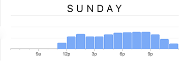

In this project, I was given a list of business where the website was either outdated or could use some improvement. I was also given a list of three proto-personas and I was tasked with redesigning the website so it would improve my proto-personas experience. I chose Long Provincial Vietnamese Restaurant and Lauren Berlinger as my proto persona and quickly found that the website was very cumbersome. It had an extensive list of menu items without any pictures so users found it hard to understand what they were ordering. My first priority was redesigning the homepage layout and navigation so that it was simple and aesthetically appealing. Adding photos to the menu was my next step and then adding additional features for take out and table reservations.
Role: User Experience Designer
Tools: Paper, Pencil, Sketch, Key Note, Adobe Photoshop, inVision
Sprint: 10 Days
“It's not whether I can afford it, it's whether i can afford NOT to have it”
- Lauren B.
Tech empathy: High | Purchase cycle: Short | Has: MacBook Air, iPhone, iPad
Favorite Brands | MailChimp, Uber, Urban Outfitters, Scotch Malt Whiskey Society
The underlined bullet points were the needs and pain points that I addressed in my design
Needs from online store
Pain Points
How we can serve
Long provincial is traditional Vietnamese restaurant located in downtown Seattle and is the sister restaurant to Tamarind Tree from the International District of Seattle. They've been open for almost 10 years specializing in traditional dishes that can be found throughout the regions of Vietnam with a full bar and cocktail menu. They also provide full service catering and private or semi-private events that serve sit-dinners or self-serve buffet style.
Sunday Peak Times
Long Provincial's peak times during the week is lunch time. During the weekends, their dinner time picks up quite a bit and Friday is a combination of both lunch and dinner being high traffic. Based on this data I discovered on Google, my target users would be people who work in downtown Seattle and go out to eat for lunch.
The first thing I noticed about Long provincial's website was the copyright date, the press release page has not been updated since 2009 which is one of Lauren's needs; regularly updated inventory. As the website currently stands, Lauren would not be a customer because she is unable to purchase from the website let alone her mobile, which also means no fast shipping or product reviews. After further analysis, I discovered that there are 158 menu items and only 14 photos on the entire website.
I compared websites features with competitors that were similar to Long Provincial to learn more about what other businesses had to offer from their website. Babar offers modern Vietnamese food and with an emphasis on cocktails. Green Leaf serves a similar menu as Long Provincial with their traditional Vietnamese cuisine. Pho 25 is located less than a mile from Long Provincial. Between all the competitors, a key feature that they all shared except for Long Provincial was a food Gallery
Babar Seattle is located in Capitol Hill on 12th Ave and Cherry. It is also a late night Vietnamese cuisine that has a modern spin on the traditional dishes. Babar Includes a full bar and is also open late nights. Babar Seattle is in a heavy lunch traffic area as its near Seattle University. Their pricing is about the same as Long Provincial however Long provincial does have a couple plates near $30, the average cost is about the same however Babar has a slightly smaller menu. The area that Babar is located has paid parking but there are quite a few places to choose from so it’s not a big hassle find a place to park.
Green leaf is located in the iconic International District of Seattle. They’re open till 11pm and they’re peak time is around dinner time (6-7pm) They boast a large menu similar to that of Long Provincial with similar pricing for most of their dishes. Green leaf’s average price is a bit lower but the selection is just as high as well as quality. Green leaf is in a two story building and has capacity of about 96 patrons.
This Vietnamese restaurant would be a direct competitor to Long Provincial during lunch time as they serve the similar types of foods. Their peak hours are lunch time and they have a large seating area. Their website does not allow any type of online ordering. They’re located a few blocks away from Long Provincial.
The last bit of research that I conducted was a task analysis followed by a user interview. I began by asking users to find a particular type of food item and then order it for pickup. Users were quickly overwhelmed by the extensive menu and commented how it was such a waste of time to use their website because it doesn't show any pictures of their products and then the users would also have to call in to make the order.
“Are there no pictures? How do I know what I'm ordering from this place?”
Ly T."There's so many things in here!! This menu is overwhelming as h***!!"
John P.
After my research, I was able to discover where Long Provincial's website is lacking and how I can design a better experience for Lauren. I found that multiple users were not exactly sure what food they would receive based on the description alone mentioning that having pictures would help them understand what they were ordering. One of the ways that we are able to serve Lauren based on the proto-persona is having multiple or large product photos. My website analysis discovered that out of 158 menu items, there are only 14 photos in total on the entire website. Based on the feature analysis, all of Long Provincial's competitors have a food gallery. The common pattern here and minimum viable product would be adding photos to the website would help improve the user's experience.
However the ideal user story for Lauren would allow her to order her food from her mobile, check out quickly and have her food ready for her. From a user experience designer standpoint, adding photos would be the absolute MVP but from a business standpoint, I wanted to address a way to improve revenue as well. I wanted to do more than adding photos to the website.
Lauren is at her office and will be going on lunch soon, she’s interested in authentic Vietnamese food so she goes online to find something nearby her office in Downtown. Her current project is due so she's on a tight schedule. Lauren was able to find the food she was looking for and order from the website so she could pick up the food and save some time.
Lauren does not know what she wants to order from Long Provincial because they don't have any pictures to help guide her. The website also lacks an ordering system that would allow her to place a takeout or delivery order.
I believe by redesigning the website to include photos and allow users to order online will improve users confidence in the food they are ordering. I know this will be true when there is an increase in take-out or delivery orders with a low amount of customers complaining about getting something they weren't expecting.
I started the develop phase by creating a sitemap with Omnigraffle of the current website. This should help me understand how the current website's navigation structure is and the relationship between different pages, so I could improve it. The current sitemap is a massive rabbit hole that requires users to loop back every time they want to see a different menu item.
To develop a site map that was more organized, I used card sorting to help identify similar categories. WIth 30 participants, I was able to reduce the menu items from 16 down to 5. Appetizers, lunch, dinner, dessert and beverages.
Current Site MapAfter reviewing the card sorting, I was able to flatten the site map making the navigation much simpler for the user. Contact us now contains all the restaurant information such as phone number and location, reservations, catering, and employment. I found that by categorizing the food into simpler terms such as soups, rice and noodles; users had a better idea of what the items might be based on the category. Due to the complexity of developing an in-house take out system and the time constraints, I opted to have the website redirect the user to a 3rd party vendor, ubereat as that is also one of Lauren's favorite brand. Keeping MVP in mind, I decided to have the take out system as a stretch goal.
With a site map in mind, I started sketching a few pages so I would have a general idea of what I would wireframe. I tried a few different landing pages but I knew the menu needed to have a photo gallery.
After some rapid iterations and usability testing and drawing some inspiration from Long Provincial's sister restaurant named Tamarind Tree, I began designing my first set of wireframes for additional usability testing. Although navigation was much simpler now, other information that users were expecting to see was lacking. I ended up omitting the press page and previous special events page because the articles and menu were almost 10 years old and no longer relevant.
The final iteration has the multiple pages that Lauren wants from a website. Due to time constraints, I opted to use a 3rd party to handle online reservations and take out orders. OpenTable will open when users click on the reservations page and UberEats will also open when attempting to order take out. After completing more usability testing, my final set of wireframes were read to pass off to a visual designer.
With the wireframes complete, and usability testing validation my design, I wanted to create redlines for the landing page so if I were to pass this on to a graphic designer, they will be able to mock up a Hi-Fi comprehensive unfortunately due to time constraints, I was not able to create that during this sprint.
I decided to keep the same branding as the current website as I did not do any research behind it. I chose to start with the font of American Typewriter to give the website a traditional and classic feel to it. Similar to the current branding now with the traditional Vietnamese Cuisine.
 Hi-Fi Comp. Designed w/Sketch
Hi-Fi Comp. Designed w/Sketch
I'm always interested in hearing ideas and brainstorming!


{kind=link}
{kind=link}
{kind=link}
{kind=link}
{kind=link}
{kind=link}
{kind=link}
{kind=link}
{kind=link}
{kind=link}
{kind=link}
{kind=link}
{kind=link}
{kind=link}
{kind=link}
{kind=link}
{kind=link}
{kind=link}
{kind=link}